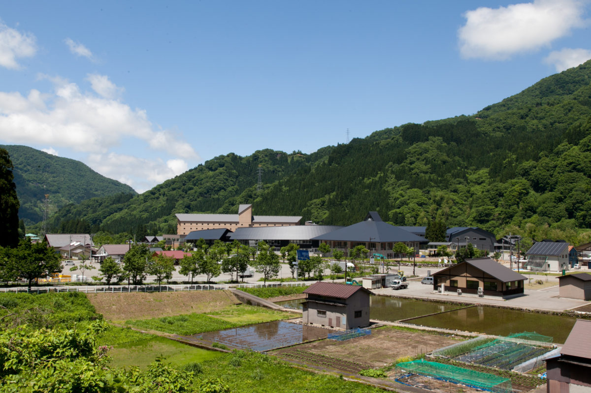
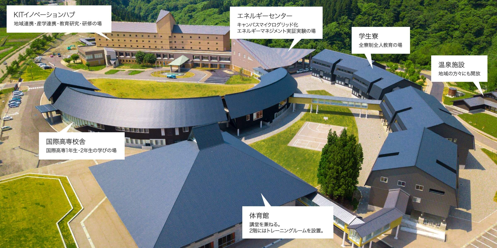

ICT; International Colledge of Technology Kanazawa, is a school in Japan, Ishikawa perfecture. It is a school to learn STEM(Science, Technology,Engineering,Math) in English. This website was made as a part of a class project.To learn more, access the link in the resources.
  source:https://www.ict-kanazawa.ac.jp/campuslife/Kosen is a 5 year school in Japan that usually teaches engineering, manifacturing and technology.It is not a high school and it is closer to colledge.
Click here to learn more about Kosen